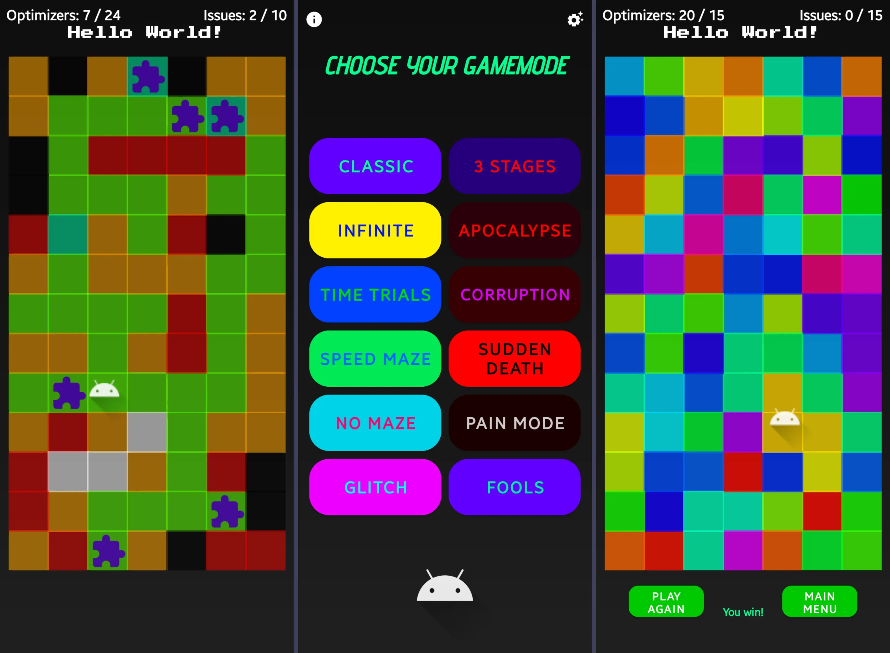

Hello, World Universe!
About Zytronium
Welcome to my personal developer website! I'm Zytronium, a passionate developer from Oklahoma who loves programming, space, and gaming. This site serves as a home base for my projects, experiments, and developer identity.
Project Showcase
Projects without a GitHub link are private repos or are not on GitHub. Projects with no deployed project link (i.e. "Play Store" or "Website") are not available publicly. Projects with neither link are totally real projects, and you'll just have to take my word for it.
Code Maze
A mobile game with many gamemodes where you navigate mazes, avoid issues, and collect optimizers to win. It was my first large coding project. Built with Android Studio in Kotlin.
Infinite 8-Bit Racing
A retro-style 8-bit mobile racing game where you dodge slower racers, developed in Android Studio in Kotlin.
Wormhole to Infinity

Fly through a wormhole with colorful rings manually placed to sync with the beat of a Stranger Things remix. Built in Unity.
Pycraft Rcon
A python project that uses Rcon to remotely run commands on a Minecraft server. It mixes Python logic with vanilla Minecraft commands to create fun actions (i.e. swap_all_players(), smite(entity), nuke(entity), orbital_laser(entity)) and even creates entire minigames with them (i.e. Deathswap and Nuclear Mayhem). Pycraft Rcon is mostly built like a Python package, but is not available on Pip, and must be downloaded from GitHub.
Astralis
A sci-fi text adventure game where you have to save your universe. It can be played both on the website and through an Android mobile app. Astralis was a two-week three-person project that used HTML, CSS, JavaScript, Kotlin, XML, and Firebase Firestore.
The Faction Nexus
A web hub for Starscape factions and their community. A Discord bot to interface with the database and add extra features (such as subscribing to news articles) is also in the works. This is an active major personal project as of June 2025.
Internet Admin Panel
A website designed to look like an admin panel for the entire world wide web for which someone accidentally granted full admin permissions to any visitor. However, upon further inspection, there are many humorous features, such as a fake security error upon clicking "Revoke All SSL Certificates."
Useless Facts Generator
Useless Facts Generator is a simple website that gives you a random fact every time you press the button. It has a light and dark theme with a stylish background image that changes with the theme. With almost 200 facts, it feels as if it truly is generating random fun facts on the fly. Most of the fun facts were AI-generated, so take it with a grain of salt, but it's not like you're going to find anything truly useful here anyway.
Sound Canvas
Sound Canvas is a responsive musical website that creates musical sounds from a canvas. The Canvas creates a sound that varies in sound and pitch based on where the cursor is. It also has many presets and adjustable frequency settings. The Notes page acts like a piano keyboard, and can even be played with a computer keyboard. Sound Canvas was a one-week three-person project, and is built with HTML, CSS, JavaScript, and Bootstrap.
Starry Starscape
A one-day experiment attempting to create a stellar scene using only HTML elements, CSS, and a bit of JavaScript. CSS animations subtly animate nebulae in the background while certain stars twinkle and dust particles float around the scene. The scene is accompanied by a shooting star sporadically, as well as the occasional meteor shower. A slightly modified version of this is being used as the background of this very page. (This project is unrelated to the video game, Starscape.)
Linx TIpps Adn Triks
A Bootstrap project thrown together in a couple of hours as a joke. Sometimes I have sudden ideas for small projects or experiments and just jump right in. Linx TIpps Adn Triks (a misspelling of "Linux Tips and Tricks") is a satire website showing up "tips and tricks" for new Linux users. However, everything listed is actually a complete joke, most of which would actually be harmful to run. This website trusts that its audience can recognize it as satire and understand that nothing here is intended to be taken as actionable advice or real-world instruction. (Just to be safe, there is a disclaimer shown upon visiting.)
Pycraft Rcon Bot
A Discord bot that uses the aforementioned Pycraft Rcon project to allow Discord users to interact with a Minecraft server. Initially just another experiment, it is now primarily used to let Discord friends troll me on my server. It has bot commands like /orbital-blast (targets player with an orbital space laser), /nuke (initiates a nuclear strike on given player), /rtd (rolls the dice and determines what to do based on the total number rolled), and /bless (gives a player random overpowered gear).
Contact Me
Message me on Discord: @zytronium | discord.gg/nMXxW5xVM4
Email me: zytronium.dev.astronaut655@passinbox.com
I don't wish for bots to start spamming my email, so the above email is a temporary alias that I change whenever I start getting spam mail. This forwards directly to a special folder I created in my inbox.
This website is a work-in-progress.